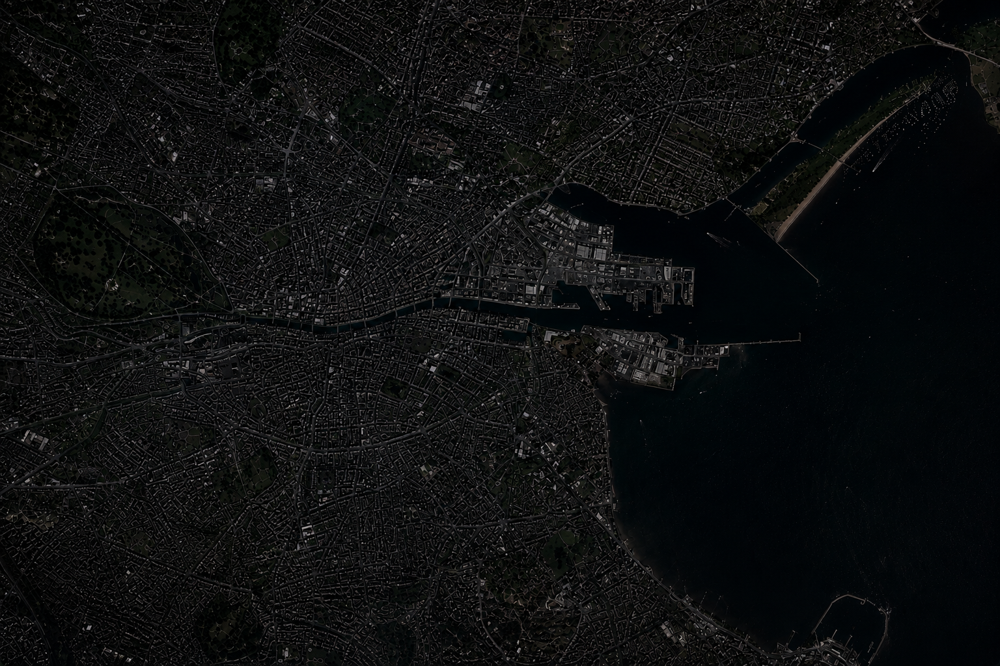

Interactive Archive
Sound Capsule
Preserving the soundscapes of places through field recording, storytelling and interactive design.
Live Demo
Mini Sound Capsule
A compact version of Sound Capsule featuring four field recordings from Dublin. Select a featured recording to explore and play its sound.
Explore the demo →
1 of 4
Parks
St Patrick’s Park
Version 1 – Park Ambience
Natural park ambience with birds, wind and leaves.
Featured Recordings
4 sounds from Dublin
Parks
St Patrick’s Park
Version 1 – Park Ambience
Natural park ambience with birds, wind and leaves.
Parks
St Patrick’s Park
Version 2 – Cathedral Bells
Park ambience with cathedral bells sounding in the distance.
Transport
Smithfield Luas Stop
Transport ambience
Luas arrivals and departures, announcements, footsteps and surrounding street sounds.
Streets
Drury Street
Summer Evening
Evening atmosphere with conversation, passing cars and city life.
Technologies & Tools
Development Process
Field Recording
Capturing soundscapes on location.
Processing & Editing
Cleaning, editing and mastering the recordings.
Metadata & Tags
Adding descriptions and context for each sound.
Map Integration
Connecting each recording to its location.
Player & UI
Designing the playback experience.
Collections
Organising recordings by environment and theme.